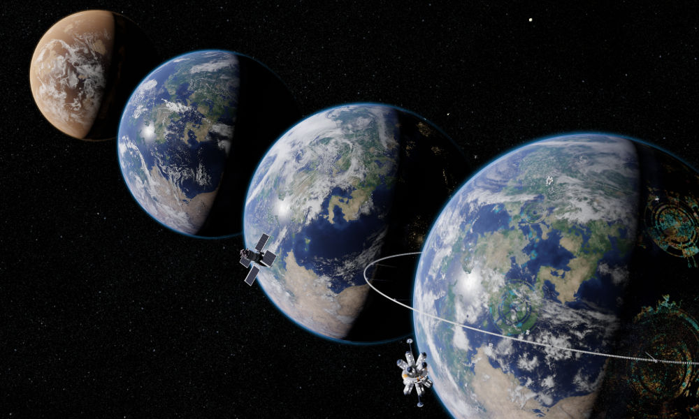
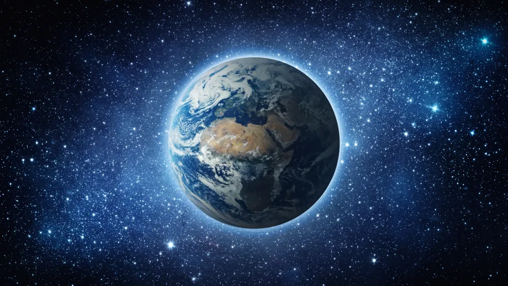

The evolution of Earth spans billions of years, and its journey is a captivating story of dynamic changes and remarkable transformations. From its humble beginnings as a molten ball of rock and metal, Earth gradually cooled and formed a solid crust. Through geological processes such as plate tectonics, volcanic activity, and erosion, the planet's surface underwent significant alterations, shaping the continents, mountains, and oceans that we recognize today.
Approximately 3.5 billion years ago, life emerged on Earth in the form of simple microorganisms. These early life forms, known as prokaryotes, thrived in the planet's oceans and played a crucial role in shaping its atmosphere. Over millions of years, through processes like photosynthesis, these organisms released oxygen, paving the way for the evolution of more complex life forms.
The Cambrian explosion, around 540 million years ago, marked a pivotal period in Earth's history. During this time, a remarkable burst of biological diversification occurred, leading to the rapid emergence of a wide array of complex organisms. This event laid the foundation for the evolution of diverse marine ecosystems, including the proliferation of arthropods, mollusks, and early fish-like creatures.
The colonization of land by plants and animals began around 500 million years ago, as organisms gradually adapted to terrestrial environments. Plants evolved mechanisms to obtain water and nutrients from the soil, while animals developed specialized adaptations for movement and respiration. This transition sparked a cascade of evolutionary innovations, eventually leading to the diverse ecosystems that thrive on land today.
The evolution of mammals, including our own species, can be traced back to approximately 200 million years ago. Mammals underwent remarkable adaptations, including the development of hair, lactation, and increased brain size, which allowed them to thrive in a variety of habitats. The rise of primates, and eventually humans, brought about further complexity and cognitive abilities, shaping the course of Earth's history in profound ways.
The evolution of Earth is an ongoing process, and our understanding of its intricate journey continues to deepen through scientific exploration and research. Studying the planet's geological and biological past provides valuable insights into the interconnectedness of life and the delicate balance that sustains our planet's biodiversity.